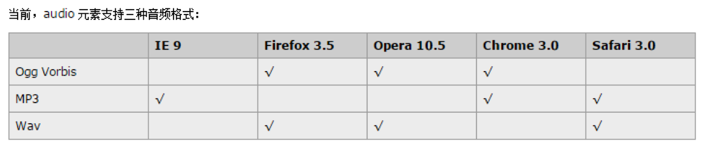
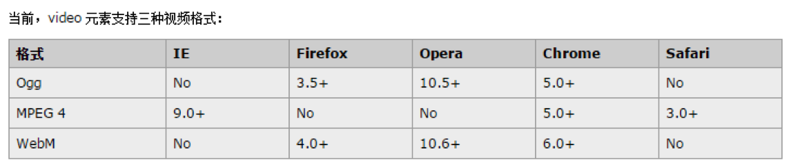
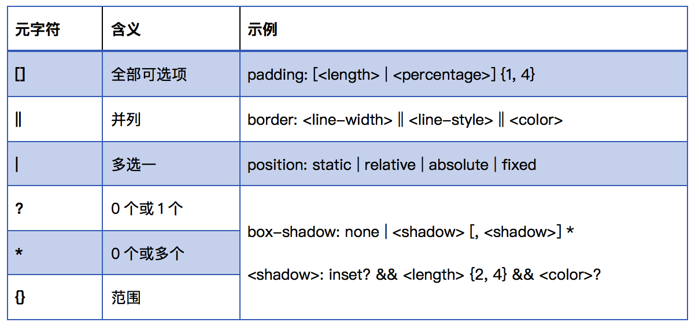
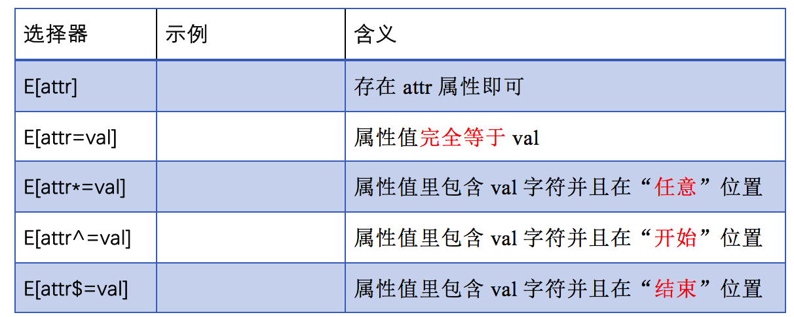
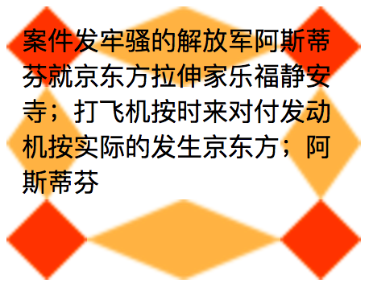
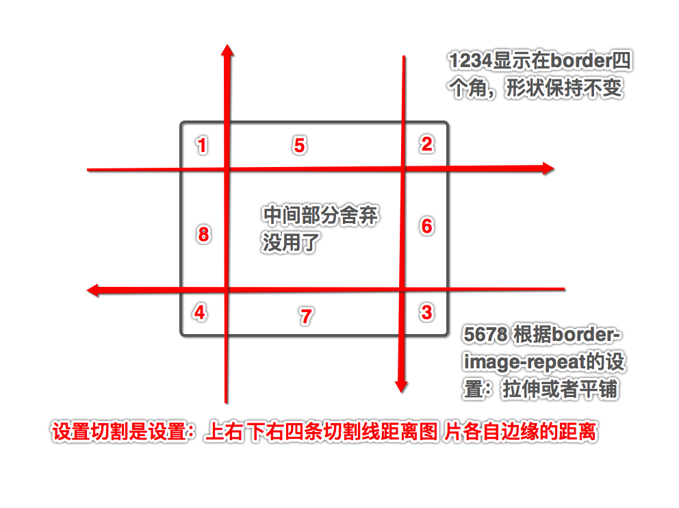
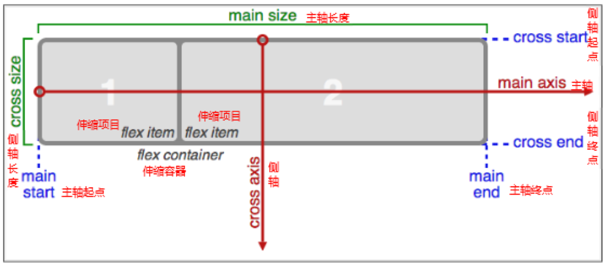
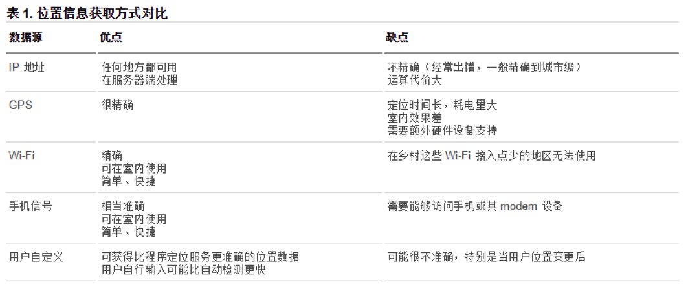

| HTML | 结构 | HTML4.0 |
| CSS | 样式 | CSS2.0 |
| JS | 行为 | 用户的交互 |
狭义概念：
HTML5就是HTML4.0的升级版
广义概念：(一般，我们说的都是广义概念)
HTML5代表浏览器端技术的一个发展阶段。在这个阶段，浏览器呈现技术得到了一个飞跃发展和广泛支持，它表示：HTML5 + CSS3 + Javascript的增强的API在内的一套技术组合
HTML5并不仅仅只是做为HTML标记语言的一个最新版本，更重要的是它制定了Web应用开发的一系列标准，成为第一个将Web做为应用开发平台的HTML语言。
优点：http://www.intertid.com/school/2014/595568.shtml
HTML5：定义了一系列新元素，如新语义标签、表单域控件、多媒体标签等
CSS3：一些jQuery中的选择器，在CSS3中增加了，还有一些样式：shadow、border-image、transform、animation等
JavaScript中：
DOM新增API：DOM中如：获取DOM对象的方法、操作类名的方法，以及元素节点的拖拽事件
BOM新增API：HTML5中，浏览器还在JavaScript中，开放了许多API，如：地理定位、重力感应、硬件访问等，可以在浏览器内实现类原生应用，甚至结合Canvas我们可开发网页版游戏
1、新技术：都是坚持渐进增强原则
2、考虑用户群体
3、遵照产品的方案
4、听Boss的
HTML5在语法规范上也做了比较大的调整，去除了许多冗余的内容，书写规则更加简洁、清晰。
特点：
1、更简洁
<!DOCTYPE HTML> 不用再声明DTD
2、更宽松
单标签不用写关闭符号
双标签省略结束标签，会自动补全
html、head、body、colgroup、tbody可以完全省略
实际开发中应规范书写，不建议太随意 ！
W3C验证地址
https://validator.w3.org/
语义标签对于我们并不陌生，如<p>表示一个段落、<ul>表示一个无序列表<h1> ~ <h6>表示一系列标题等，在此基础上HTML5增加了大量更有意义的语义标签，更有利于搜索引擎或辅助设备理解HTML页面内容。
传统的做法我们或许通过增加类名如class="header"、class="footer"，使HTML页面具有语义性，但是不具有通用性。
HTML5则是通过新增语义标签的形式来解决这个问题，例如<header></header>、<footer></footer>等，这样就可以使其具有通用性。
传统网页布局：
<!-- 头部 -->
<div class="header">
<ul class="nav"></ul>
</div>
<!-- 主体部分 -->
<div class="main">
<!-- 文章 -->
<div class="article"></div>
<!-- 侧边栏 -->
<div class="aside"></div>
</div>
<!-- 底部 -->
<div class="footer"></div>
H5 经典网页布局:
<!-- 头部 -->
<header>
<nav></nav>
</header>
<!-- 主体部分 -->
<section>
<!-- 文章 -->
<article></article>
<!-- 侧边栏 -->
<aside></aside>
</section>
<!-- 底部 -->
<footer></footer>
本质上新语义标签与<div>、<span>没有区别，只是其具有表意性，使用时除了在HTML结构上需要注意外，其它和普通标签的使用无任何差别，可以理解成<div class="nav"> 相当于 <nav>。
尽量避免全局使用header、footer、aside等语义标签
不同的浏览器对h5部分的兼容、渲染效果是差别很大的
我们在测试ie 的兼容的时候，有一个叫做ietest 的软件，这个软件可以模拟ie6-ie11
兼容在不支持HTML5新标签的浏览器里，会将这些新的标签解析成行内元素(inline)对待，所以我们只需要将其转换成块元素(block)即可使用
但是在IE9版本以下，并不能正常解析这些新标签，但是却可以识别通过document.createElement('tagName')创建的自定义标签，于是对于IE9以下的浏览器，我们的解决方案就是将HTML5的新标签全部通过document.createElement('tagName')来创建一遍，这样IE低版本也能正常解析HTML5新标签了，在实际开发中我们更多采用的是通过检测IE浏览器的版本来加载三方的一个JS库来解决兼容问题。
<!--[if lte ie 8]> <!-- 条件注释 只有ie能够识别-->
<script src="html5shiv.min.js"></script>
<![endif]-->
l:less 更小、t：than 比、e:equal等于、g：great 更大
伴随着互联网富应用以及移动开发的兴起，传统的Web表单已经越来越不能满足开发的需求，所以HTML5在Web表单方向也做了很大的改进，如拾色器、日期/时间组件等，使表单处理更加高效。
了解HTML5表单的新增的特性，以及PC和移动设备间的差异，其兼容性较差。
| 属性 | 属性值 | 描述 | 表现样式 | 说明补充 |
|---|---|---|---|---|
| type | 输入email邮箱格式 | 必须带@符号 | ||
| tel | 手机号码 | 这个是不会验证的 | ||
| url | 输入url格式的 | 必须带http:// | ||
| number | 只能输入数字 | 设置step属性= 5，那么输入的数字只能是5的倍数，右边的调节箭头，每次改变的量都是5。默认是1. | ||
| search | 搜索框 | 在移动端会弹出键盘 | ||
| range | 滑块 | 有max,min,value等属性可以设置，如果设置了step属性，每滑一次就是step | ||
| color | 拾色器 | 选择颜色 | ||
| time | 显示时间格式 | |||
| date | 年月日 | 右侧可以点击，出现下拉框，可以选择(safari中没有下拉框) | ||
| month | 年月 | 右侧带下拉框 | ||
| week | 第几年第几周 | 右侧带下拉框 | ||
| datetime | 日期时间 | Safari、chrome都没什么效果 |
<output> 输出展示信息，不做数据提交
度量器<meter> 表示度量器，不建议用作进度条
度量器：
<progress></progress> 进度条
部分类型是针对移动设备生效的，且具有一定的兼容性，在实际应用当中可选择性的使用。
智能下拉列表<datalist> 数据列表，与input的list属性配合使用
作用：可以通过右侧的三角符号，弹出下拉菜单，手动选择。也可以通过已经输入的字，匹配出菜单中合适的选项
语法：<input list="data">
<datalist id="data">
<option value = "男"></option>
<option value = "女"></option>
<option value = "不详"></option>
</datalist>
<keygen> 为表单进行加密，直接写在表单中即可
keygen 元素的作用是提供一种验证用户的可靠方法。
keygen 元素是密钥对生成器（key-pair generator）。当提交表单时，会生成两个键， 一个是私钥，一个公钥。
私钥（private key）存储于客户端，公钥（public key）则被发送到服务器。公钥可用于之后验证用户的客户端证书（client certificate）。
novalidate:关闭默认的验证功能（只能加给表单标签form）
表单域的属性：placeholder:提示文字（占位符）
autofocus:自动获取焦点
autocomplete: 自动完成（填充的） on 开启（默认） off 取消自动提示
//当我们提交过一次之后，上次提交的东西，会以智能下拉菜单<datalist>的形式展示
用于表单元素，也可用于表单自身(on/off)
required: 必填
multiple: 多选,比如：可以一次选择多个文件，然后上传
form 指定表单项属于哪个form，处理复杂表单时会需要
pattern: 自定义正则验证，比如：pattern="1\d{10}"
手机号:<input type="tel" name="tel" required="required" pattern="^(\+86)?1[3,5,8](\d{9})$">
formaction：定义提交的URL
应用于提交按钮上，如：<input type="submit" formaction="xxx.php">
oninput 用户输入内容时触发，可用于移动端输入字数统计
oninvalid 验证不通过时触发
txt1.oninvalid=function(){
//用于设置验证不通过时的 提示文字
this.setCustomValidity('亲，请输入正确的邮箱格式！');
}
在HTML5之前，在网页上播放音频/视频的通用方法是利用插件-- Flash来播放，但是大多情况下，并非所有用户的浏览器都安装了Flash插件，由此使得处理音频/视频播放变的非常复杂，并且移动设备的浏览器并不支持Flash插件。
Media palyer 插件 快播插件 flash插件
本环节学习目标了解如何通过HTML5播放音频/视频，以及针对不同浏览器所支持的格式，做多浏览器兼容处理。
HTML5通过<audio>标签来播放音频
语法：<audio src=""></audio>
属性：autoplay 自动播放
controls 是否显示默认播放控件
loop 循环播放
preload 预加载 同时设置autoplay时些属性失效
这几个属性写上就行，无论赋不赋值都生效，可以通过附加属性可以更友好控制音频的播放
音频格式：由于版权等原因，不同的浏览器可支持播放的格式是不一样的
 兼容：IE8不支持音频标签
多浏览器支持的方案
语法：
<audio controls>
//通过source指定多格式音频文件
<source src="...mp3">
<source src="...wav">
<source src="...ogg">
您的浏览器不支持HTML音频播放功能
</audio>
HTML5通过<video>标签来播放视频。
语法：使用方法与音频几乎一样
<video src=""></video>
属性：autoplay 自动播放
controls 是否显示默认播放控件
loop 循环播放
preload 预加载，同时设置了autoplay，此属性将失效
多了两个属性：
width 设置播放窗口宽度
height 设置播放窗口的高度
可以用CSS来控制
视频格式：由于版权等原因，不同的浏览器可支持播放的格式是不一样的
 兼容语法：<video controls>
//通过source指定多格式视频文件
<source src="...mp4">
<source src="...ogg">
您的浏览器不支持HTML视频播放功能
</video>
在h3cschool里可以看到音频与视频标签，是有一些相关的API的，比如：返回时长，返回当前播放时间等的，所以控制条，我们完全可以自定义
多媒体标签 –> DOM节点的一些方法、属性和事件：load() 加载
play() 播放
pause() 暂停
属性：currentTime 视频播放的当前进度、
duration:视频的总时间
paused:视频播放的状态.
事件：oncanplay: 事件在用户可以开始播放视频/音频（audio/video）时触发。
ontimeupdate:通过该事件来报告当前的播放进度.
onended:播放完时触发
CSS3是CSS2的“进化”版本，在CSS2基础上，增强或新增了许多特性， 弥补了CSS2的众多不足之处，使得Web开发变得更为高效和便捷。
CSS3现状1、浏览器支持程度差，各自都需要添加自己的私有化前缀，才能识别生效
2、移动端支持优于PC端
3、不断改进中
4、应用相对广泛
兼容性由于CSS3兼容性问题的普遍存在，所以，在学这个模块时，为了避免因兼容性带来的干扰，运行环境如下：
1、Chrome浏览器 version 46+
2、Firefox浏览器 firefox 42+
3、Photoshop cs6 (建议)
学习w3cschool手册中的几个符号 补充：css3中获取按照HTML5规范-自定义属性的值：content:attr(data-text); (css中获取!)
CSS3新增了许多灵活查找元素的方法，极大的提高了查找元素的效率和精准度。
增强了
属性选择器
伪类选择器
伪元素选择器
前两者就是借鉴jQuery中var node = $(selector)中的过滤选择器，与jQuery中的长得一模一样
CSS2.0中，创造了属性选择器，3.0版本，借鉴jQuery，对其进行了进一步的加强
其特点是通过属性来选择元素，具体有以下5种形式：
CSS2.0中，我们学过状态伪类选择器:link、:active、:visited、:hover (根据标签状态L-V-H-A)
CSS3又新增了其它的伪类选择器。
Ⅰ.结构(位置)伪类 - jQuery子元素过滤选择器以某元素相对于其父元素或兄弟元素的位置来获取无素的结构伪类。
选中父元素中的第一个子元素，如果它是li标签
选中父元素中的最后一个子元素，如果它是li标签
选中父元素中的第5个子元素，如果它是li标签
参数：
具体数值，不能小于0
n: 表示所有
偶数 = 2的倍数： 2n 或者 even
奇数 = 2的倍数-1：2n-1 或者 odd
谁的倍数：Xn，比如：6n
前5个： -n+5
从后向前选择， 选中倒数第3个，如果是E标签
参数与:nth-child()一样：
E:nth-last-child(-n+5) 后五个
注意：所选到的元素的类型 必须是指定的标签类型,否则选择无效；
指定父元素子元素中，查找的范围nth-child()是从父元素的所有子节点(不管什么类型)中排序寻找,我们可以限定在(父元素子节点中)某一个类型上,语法如下
E:first-of-type 匹配父元素子节点 -> 该元素类型的第一个元素。
E:last-of-type 匹配该类型中的最后一个元素。
E:nth-of-type(n) 匹配该类型中的第n个元素。
E:nth-last-of-type(n) 匹配该类型中的倒数第几个
Ⅱ.空伪类 - jQuery内容过滤选择器选中没有任何子节点的E元素；（使用不是非常广泛）
没有任何的子元素，包括空格.
Ⅲ.目标伪类 - jQuery基本过滤选择器表示元素被激活的状态 要配合锚点使用，表示a链接点击之后，页面滚动到的那个设置了id的标签，即锚点：h2:target:{ color: red }
新的锚点出现时，旧的锚点的状态会消失，被激活的锚点，同一时间只能有一个
Ⅳ.排除伪类 - jQuery基本过滤选择器除selector（任意选择器）外的元素会被选中；
1.就是通过css模拟出HTML效果，来给页面添加内容，实质是没标签的，所以叫伪的元素
2.相当于给标签最前、最后加了一个行内元素
3.必须要有content属性
":" 与 "::"区别
区别在于区分伪类和伪元素
CSS2中 E:before或者E:after，是属于伪类的，并且没有伪元素的概念
CSS3中的规范里“:”用来表示伪类，“::”用来表示伪元素
新版本下E:after、E:before会被自动识别为E::after、E::before，按伪元素来对待，这样做的目的是用来做兼容处理。
文本的第一个字母或字（如中文、日文、韩文等）；
常用于设置首字母下沉效果{font-size:40px; float:left;//文本绕字效果}
文本第一行； 文本第一行高亮..
可改变选中文本的样式； 通过设置 color background
兼容写法：
selector {
:-webkit-; //谷歌 苹果
:-moz-; // 火狐
:-ms-; //IE
:-o-; //欧朋
: ; //最后一般加一个正常写法
}
通过http://caniuse.com/ 可查询CSS3各特性的支持程度，一般兼容性处理的常见方法是为属性添加私有前缀，如不能解决，应避免使用，无需刻意去处理CSS3的兼容性问题。
我们需要知道每个属性，能被那个版本的浏览器支持.
代码书写技巧，编辑器快捷语法：在写一些样式的时候，先将样式属性写出来，不带分号，这时候点击tab，如果这个属性可能需要加私有化前缀，点击tab后，会自动帮我们加上，不应该有私有化前缀的，就帮我们加上了冒号与分号
新增了RGBA、HSLA模式，其中的A 表示透明度通道，即可以设置颜色值的透明度，相较opacity，它们不具有继承性，即不会影响子元素的透明度。
RGBA(Red、Green、Blue、Alpha)R、G、B 取值范围0~255
A 透明度 取值范围0~1
HSLA(Hue、Saturation、Lightness、Alpha)H 色调 取值范围0~360，0/360表示红色、120表示绿色、240表示蓝色
S 饱和度 取值范围0%~100%
L 亮度 取值范围0%~100%
A 透明度 取值范围0~1
关于透明度：1.opacity样式属性
只能针对整个盒子设置透明度，子盒子及内容会继承父盒子的透明度；
2.transparent样式属性
不可调节透明度，始终完全透明
3.用上面两种方式，设置盒子background-color，并调整上面两种方式的A，都只针对当前盒子，与子盒子无关
补充：RGBA、HSLA可应用于所有使用颜色的地方。
RGBA是代表Red（红色） Green（绿色） Blue（蓝色）和 Alpha的色彩空间。虽然它有的时候被描述为一个颜色空间
text-shadow: 水平偏移量、垂直偏移量、模糊度、颜色（可设透明度）
参数
水平偏移量 正值向右 负值向左；
垂直偏移量 正值向下 负值向上；
模糊度是不能为负值；
可以设置多个阴影，用 逗号 隔开
text-shadow: 5px 5px 2px #ccc, -5px -5px 2px #ccc;
案例：浮雕文字，也就是凸凹文字
本质，也就是两个阴影造成的视觉效果
.tu{
text-shadow: -1px -1px 1px #fff, 1px 1px 1px #000;
}
.ao{
text-shadow: -1px -1px 1px #000, 1px 1px 1px #fff;
}
box-shadow: 水平位移 垂直位移 模糊程度 阴影大小 阴影颜色 外/内阴影(inset) 外阴影不用写
参数：
水平偏移量 正值向右 负值向左；
垂直偏移量 正值向下 负值向上；
模糊度是不能为负值；
设置阴影的大小 默认是0 等大
设置阴影的颜色
inset可以设置内阴影；默认是外阴影
补充：行内标签、行标签都可以设置
设置边框阴影不会改变盒子的大小，即不会影响其兄弟元素的布局。
可以设置多个阴影，实现更好的效果，增强立体感。
比如：box-shadow: 5px 5px 5px 27px red, -5px -5px 27px green;
CSS3中可以通过box-sizing 来指定盒模型，即可指定为content-box、border-box，这样我们计算盒子大小的方式就发生了改变。
简单来说：盒子实际宽高 = 盒子content宽高 + padding + border
content-box是默认值，就是我们设置标签宽高，其实在设置content宽高，如果我们再设置padding、border，那么盒子实际宽高就会增加。
border-box是表示，我们设置的标签宽高，是在设置盒子的实际宽高，如果我们再设置padding、border，盒子的实际宽高是不会改变的，content的宽高会相应的被挤压减小。
我们把第二种方式叫做盒模型
兼容性比较好
在我们移动端适配的时候，一般都是设置：box-sizing: border-box
background: url() left center no-repeat; // 可以将background-size写在最后, /隔开
background-size: cover;
background-origin: padding-box(默认值)
background-clip: padding-box(超出内边距,默认)
背景在CSS3中也得到很大程度的增强，比如多重背景、背景图片尺寸、背景定位参照点、背景裁切区域等。
背景图片尺寸、多背景在实际开发中应用十分广泛
background:url() (以前的样式属性)增加了，设置多重背景的功能
以逗号分隔可以设置多背景，可用于自适应局
语法
div{
background: url(images/bg1.png) no-repeat left top ,
url(images/bg2.png) no-repeat right top ,
url(images/bg3.png) no-repeat right bottom ,
url(images/bg4.png) no-repeat left bottom ,
url(images/bg5.png) no-repeat center
}
设置了多背景之后，下面如果要分别background-size/background-origin等，也是用逗号分开，与多背景，要一一对应
background-size:width,height 可以设置背景的宽度以及高度值的格式：
设置具体数值
设置百分比：背景宽高为标签的百分比
设置auto：保持图片的比例，不拉伸，不压缩，自动适应
background-size: 100% auto. 表示：背景宽为标签宽，在图片不变形的情况下，自适应高度。三种情况：要么正好，要么标签空白一块，要么图片被切割
两个都是auto，就表示保持背景图片原大小不变
设置contain：同iOS中的UIViewContentModeScaleAspectFit, 图片不拉伸/压缩，图片完全显示，但是可能有一部分控件会显示空白
设置cover：同iOS中的UIViewContentModeScaleAspectFill, 图片不拉伸/压缩，控件完全填满，但是可能有一部分图片可能会被裁剪掉
注意：1. 可以连写在background中，写在最后，用 / 号分开
2. 当设置了background-size，且具体数值 < 标签宽高的时候，默认是平铺的。绘制的background平铺将标签铺满，可以设置background-repeat = no-repeat关闭平铺
3. ios控件多大，背景多大，所以我们设置控件大小即可，而前端标签与背景是不一样大小的，甚至还有多背景
所以我们设置背景图片时，如果发生，图片与控件不能对齐显示，图片或过大过小，要设置background-size，移动端开发时，经常遇到这种情况
border-box: 以边框外框做为参考原点；
padding-box: 以内边距外框做为参考原点； 默认值
content-box: 以内容外框区做为参考点；
background-clip设置背景区域clip(裁切content-box: 超出内容范围的图片，裁剪掉
padding-box: 超出内边距范围… 默认值
border-box: 超出border范围…
渐变是CSS3当中比较丰富多彩的一个特性，通过渐变我们可以实现许多炫丽的效果，有效的减少图片的使用数量，并且具有很强的适应性和可扩展性。
可分为线性渐变、径向渐变
线性渐变 （gradient 变化）linear-gradient线性渐变指沿着某条直线朝一个方向产生渐变效果。
语法：background:linear-gradient( // 设置background与background-image都行
<angle>
渐变起始颜色
渐变终止颜色
)
linnear-gradient类似于一个方法，参数<angle>如下讲解：
<angle>：
用角度值指定渐变的方向（或角度，单位deg）。
to left：设置渐变为从右到左。相当于: 270deg
to right：设置渐变从左到右。相当于: 90deg
to top：设置渐变从下到上。相当于: 0deg
to bottom：设置渐变从上到下。相当于: 180deg。这是默认值，等同于留空不写
设置几段不一样的颜色，渐变
background: linear-gradient(to right,
yellow 0% ,
red 40% ,
green 70% ,
blue 100%
);
设置几段不一样的颜色，不渐变，骤变
background: linear-gradient(45deg,
yellow 0%, yellow 25%,
blue 25%, blue 50%,
red 50%, red 75%,
green 75%, green 100%
);
设置几段不一样的颜色，并设置滚动：
在上面的基础上，再加上以下代码
background-size: 100px 100px;
//设置上面设置生成的背景的大小,当值<标签大小，会自动平铺满
animation: move 1s linear infinite; //设置动画
@keyframes move {
from {}
to {
background-position: 100px 0;
}
}
设置不一样的颜色的时候，设置的百分比，在没有设置background-size时，是相对于盒子大小的，当设置了background-size时则是相对于background-size的。
radial-gradient径向渐变指从一个中心点开始沿着四周产生渐变效果
语法：radial-gradient（辐射半径, 中心的位置，起始颜色，终止颜色）;
参数：如linear-gradient一样，radial-gradient也如同一个函数，参数如下：
辐射范围
即圆半径 (半径越大，渐变效果越大，不写表示标签内渐变)
可以写一个数值，表示是圆，也可以写两个，表示是椭圆。水平、垂直
中心点
默认是圆的中心 (中心点的位置是以盒子自身左上角为坐标原点)
at left/right/center/bottom/top
at left 表示左边，竖直中点(不写就表示center)
background-image: radial-gradient(200px 100px at center,yellow ,green);
边框的形状，是梯形的，我们设置四条边上的边框颜色不同就能看出来，不过当我们只有三边边框的时候，切口，搜索引擎会帮我们切平。
iOS：layer.cornerRadius就是一个数值，表示圆角半径。圆角形状为 圆角半径画出的圆的 1/4
前端中：border-radius：有所不同，每个角都是可以设置两个值的，x,y 水平半径，垂直半径
当两个值一样的时候写一个即可，表示圆角是一个圆的1/4
当两个值不一样的时候，那就表示圆角是椭圆的1/4
水平半径 != 垂直半径：border-top-left-radius: 60px 40px; //水平 垂直半径 圆角是个椭圆的1/4
如果是连写，用 / 号隔开：
border-radius： 60px 60px 60px 60px / 40px 40px 40px 40px;
简写：border-radius：60px / 40px;
border-top-left-radius: 60px;
如果是连写：
border-radius：60px 60px 60px 60px;
简写：border-radius: 60px;
连写设置顺序都是：左上-右上-右下-左下
设置border-radius： 50%的意思如果宽高相同，那结果就是个圆，如果宽高不一样，那就相当于border-radius：盒子宽一半 / 盒子高一半
1. 边框图片(设置的是标签的四条边上的图片显示，与border没丝丝关系，而且不能与border同时出现，后出现覆盖前面的。
2. 设置border-image不影响盒子大小、不影响内容显示
 border-image-source:url(“”)设置边框图片的地址.
border-image-slice(不带单位符号)裁剪图片，如何去裁切图片，浏览器会自动去裁剪图片.
比如：border-image-slice:27,27,27,27
理解可以参考iOS图片的拉伸，是控制上左下右四条切割线 距离图片边缘的距离。这里是上右下左
四条切割线，切成九宫格，四个角的形状不变，其他部分拉伸
 border-image-width:20px;指定边框的宽度.
border-image-repeat: stretch边框平铺的样式
stretch 拉升，不平铺
round 平铺，会自动调整缩放比例，保证平铺部分的完整
repeat：正常平铺，但是可能显示不完整
round和repeat之间的区别
round 会在5678部分拉伸的时候，自动调整5678尺寸，拉伸之后，完整显示每个5678。
repeat 就是按照5678的本身尺寸，单纯平铺，两边的可能会被“裁切”而不能完整显示。
连写语法：border-image: border-image-source border-image-slice/border-image-width border-image-repeat;
比如：border-image: url("images/border.png") 27/20px round
开发人员可以为自已的网页指定特殊的字体，无需考虑用户电脑上是否安装了此特殊字体，从此把特殊字体处理成图片的时代便成为了过去。
支持程度比较好，甚至IE低版本浏览器也能支持。
字体格式不同浏览器所支持的字体格式是不一样的，我们有必要了解一下有关字体格式的知识。
1、TureTpe(.ttf)格式
.ttf字体是Windows和Mac的最常见的字体，是一种RAW格式，支持这种字体的浏览器有IE9+、Firefox3.5+、Chrome4+、Safari3+、Opera10+、iOS Mobile、Safari4.2+；
2、OpenType(.otf)格式
.otf字体被认为是一种原始的字体格式，其内置在TureType的基础上，支持这种字体的浏览器有Firefox3.5+、Chrome4.0+、Safari3.1+、Opera10.0+、iOS Mobile、Safari4.2+；
3、Web Open Font Format(.woff)格式
woff字体是Web字体中最佳格式，他是一个开放的TrueType/OpenType的压缩版本，同时也支持元数据包的分离，支持这种字体的浏览器有IE9+、Firefox3.5+、Chrome6+、Safari3.6+、Opera11.1+；
4、Embedded Open Type(.eot)格式
.eot字体是IE专用字体，可以从TrueType创建此格式字体，支持这种字体的浏览器有IE4+；
5、SVG(.svg)格式
.svg字体是基于SVG字体渲染的一种格式，支持这种字体的浏览器有Chrome4+、Safari3.1+、Opera10.0+、iOS Mobile Safari3.2+；
了解了上面的知识后，我们就需要为不同的浏览器准备不同格式的字体，通常我们会通过字体生成工具帮我们生成各种格式的字体，因此无需过于在意字体格式间的区别差异。
推荐http://www.zhaozi.cn/、http://www.youziku.com/ 查找更多中文字体
使用步骤：1、引入字体包
2、申明字体：告诉浏览器去哪找字体。 -> 这一步就生成了一种font-family
3、在HTML中，就可以给标签，设置font-family了
代码语法：/* 如果要在网页中使用web字体（用户电脑上没有这种字体，就需要我们先导入字体库，然后在css声明中，写上字体的路径），*/
/* @font-face 声明字体*/
@font-face {font-family: 'webfont';
src: url('font/webfont.eot'); /* IE9*/
src: url('font/webfont.eot?#iefix') format('embedded-opentype'), /* IE6-IE8 */
url('font/webfont.woff') format('woff'), /* chrome、firefox */
url('font/webfont.ttf') format('truetype'), /* chrome、firefox、opera、Safari, Android, iOS 4.2+*/
url('font/webfont.svg#webfont') format('svg'); /* iOS 4.1- */
}
/* 给标签设置font-family样式，就使用了这个字体格式，常用的方法，就是写在一个类选择器中，谁想使用字体，便签就加上这个类名*/
.webfont{ //这个类选择器的名字，一般与字体格式名称保持一致，语义化
font-family: 'webfont';
}
就是是把网页常用的一些小的图标，借助工具帮我们生成一个字体包，然后就可以像使用文字一样使用图标了。
优点：1、将所有图标打包成字体库，减少请求；
2、具有矢量性，可保证清晰度；
3、使用灵活，便于维护；
使用步骤：1、引入字体包
2、申明字体：告诉浏览器去哪找字体
3、定义字体格式的类名：
设置字体为上面声明的字体类型，需要是图标字体指定的字体类型font-family(font中的字体库，里面已经预留了字段们对应的图标字体)
4、在结构中写 图标的编码，给标签添加类名
<p><span class="iconfont"></span>扫码付款</p>
一般简单来说，会将第三步第四步合并，使用::before伪元素中添加这种图标字体：
ele::before{
content:"\e628"; //如果是在HTML中写，是：
font-family: "声明的字体类型"
}
图标字体使用的前提是字体格式
字体库是核心，能画出各种自己风格的字体，当然也能画出图片样式的字体
每个文字都有自己指定的编码，字体库就是根据编码来判断是什么字，然后绘制自己风格的字体矢量图显示出来。
字体格式，会根据，我们输入的图标字体的编码，找到字体库中，对应的图标
Font Awesome(做了一个CSS包，里面很多图标字体)下载地址：http://fontawesome.dashgame.com/
使用步骤：
1.link 导入我们下载的文件中 CSS+font文件夹(font文件夹，提供了font-family：Fontawesome类型的Web字体，而图标字体都是在字体是这个类型的基础上设置的)
2.在CSS里面，有很多类：定义图标字体
3.在我们的文件中，直接使用这些类名即可
定制自已的字体图标库CSS3在布局方面做了非常大的改进，使得我们对块级元素的布局排列变得十分灵活，适应性非常强，其强大的伸缩性，在响应式开中可以发挥极大的作用。
首先，需要明确主轴、侧轴的概念
主轴：Flex容器的主轴主要用来配置Flex项目，默认是从左到右
侧轴：与主轴垂直的轴称作侧轴，默认从上到下
 使用方法：a、指定一个盒子为伸缩盒子： display: flex
b、设置该盒子属性来调整子元素的布局方式
flex容器中的子元素是沿着主轴方向，依次排列。主轴和侧轴并不是固定不变的，通过flex-direction可以互换。
各属性详解flex-direction调整主轴方向，决定盒子的排列顺序
row: 主轴从左向右，侧轴从上到下 （默认）
reverse-row 主轴从右向左，侧轴从上到下
column 主轴从上向下，侧轴从左到右
reverse-column 主轴从下向上，侧轴从左到右
justify-content设置该盒子内容在主轴上的对齐方式
flex-start、 起点对齐：内容开头与主轴起点对齐
flex-end、 终点对齐：内容结尾与主轴终点对齐
center 居中：盒子居主轴中
space-around、 环绕：盒子分成子盒子个数块，子盒子在各部分中居中
space-between 两端对齐：两端对齐，平分
align-items设置该盒子内容在侧轴上的对齐方式
flex-start、 起点对齐
flex-end、 终点对齐
center 居中
baseline 基线对齐，默认同flex-start
Stretch: 拉伸; 给了父盒子设置完该值，是需要再给子盒子设置宽高auto，宽：根据内容来定，高：与父盒子等高(如果设置了flex-wrap换行，那高就是父盒子的1/子盒子个数)
设置给子盒子的flex控制子项目在主轴的缩放比例
设置了flex属性的子盒子，在主轴的长度加起来，按照各自flex的值的比例来分配。
不指定flex 属性，则不参与分配，按照本来的值放在那。
不怎么用的几个属性flex-wrap
控制是否换行
align-content
堆栈（由flex-wrap产生的独立行）对齐
flex-flow
是flex-direction、flex-wrap的简写形式
order
控制子项目的排列顺序，正序方式排序，从小到大
此知识点重在理解，要明确找出主轴、方向，各属性对应的属性值可参考示例源码
类似报纸或杂志中的排版方式，上要用以控制大篇幅文本。
column-count:列数
column-rule:分割线样式
column-width:列宽
column-gap:列间距
column-span:跨列 all 跨所有列
了解即可，实际意义不大。
transform：translate、scale、rotate、skew、matrix每次设置的时候，基准都是初始状态，并不是以现在的状态为基准
转换是CSS3中具有颠覆性的特征之一，可以实现元素的缩放、位移、旋转，甚至支持矩阵方式，配合即将学习的过渡和动画知识，可以取代大量之前只能靠Flash才可以实现的效果。在css3 当中，通过transform(变形) 来实现2d 或者3d 转换,其中2d 有，缩放，移动，旋转。
移动 translate(x, y)可以改变元素的位置，x、y可为负值；
正值：向右向下
负值：向左向上
如果只写一个值 水平移动
百分比 ：相对于自身的宽高
缩放 scale(水平缩放比例x, 垂直缩放比例y)可以对元素进行水平和垂直方向的缩放
x、y的取值可为小数，不可为负值；大于1放大，小于1缩小。
如果只写一个值，等比例缩放
旋转 rotate(单位deg)可以对元素进行旋转，正值为顺时针，负值为逆时针；
倾斜 skew(xdeg, ydeg)水平方向：top边不动，下面倾斜，正值向右
垂直方向：left边不动，右面倾斜，正值向下
只有一个参数，默认为水平方向。
矩阵matrix()把所有的2D转换组合到一起，需要6个参数（了解）。
学习资料：点击链接
transform-origin:left top; 默认是几何中心
我们可以同时使用多个转换，其格式为：transform: translate() rotate() scale() ...等，其顺序会影响转换的效果。
| transform赋值 | 描述 |
|---|---|
| translate3d(x,y,z) | 定义 3D 转化。 |
| translateX(x) | 定义 3D 转化，仅使用用于 X 轴的值。 |
| translateY(y) | 定义 3D 转化，仅使用用于 Y 轴的值。 |
| translateZ(z) | 定义 3D 转化，仅使用用于 Z 轴的值。 |
| scale3d(x,y,z) | 定义 3D 缩放转换。 |
| scaleX(x) | 定义 3D 缩放转换，通过给定一个 X 轴的值。 |
| scaleY(y) | 定义 3D 缩放转换，通过给定一个 Y 轴的值。 |
| scaleZ(z) | 定义 3D 缩放转换，通过给定一个 Z 轴的值。 |
| rotate3d(x,y,z,angle) | 定义 3D 旋转。 旋转的方向，遵循左手拇指法则：左手大拇指指向旋转的坐标轴的正方向，四指弯曲的方向就是旋转的正方向 |
| rotateX(angle) | 定义沿 X 轴的 3D 旋转。 |
| rotateY(angle) | 定义沿 Y 轴的 3D 旋转。 |
| rotateZ(angle) | 定义沿 Z 轴的 3D 旋转。 (必须给父盒子加透视，才能看出效果) |
| matrix3d(n,n,n,n,n,n, n,n,n,n,n,n,n,n,n,n) |
定义 3D 转换，使用 16 个值的 4x4 矩阵。 |
| perspective(n) | 定义 3D 转换元素的透视视图。 |
加给变换元素的父盒子， 就是模拟3D空间中，用户眼睛和屏幕的距离为指定距离的时候，标签transform时的现象；
perspective:1000px;
注：并非任何情况下需要透视效果，根据开发需要进行设置。
perspective的两种写法a) 作为一个属性，设置给父元素，作用于所有3D转换的子元素(常用)
b) 作为transform属性的一个值，做用于元素自身 perspective(n)
设置内嵌的元素在 3D 空间如何呈现，这些子元素必须为转换元素(行内需要转为块元素)。
flat：所有子元素在 2D 平面呈现
preserve-3d：保留3D空间，加给变换元素的父盒子，让子盒子存在三维空间中，保持3d效果
1.仅仅是影响改变transform的盒子，将盒子transform改变后，在3D中的显示模样，呈现出现
2.改变transform的盒子，是不会有交叉的，遮住就遮住了
transform-style:preserve-3d是将本身显示为一个真正的三维空间，子盒子在里面是可以有交叉，各种3D中的相互关系的。
设置元素背面屏幕的时候，是否可见，加给想要修饰的子盒子
过渡是CSS3中具有颠覆性的特征之一，可以实现元素不同状态间的平滑过渡（补间动画），经常用来制作动画效果。
补间动画：
自动完成从起始状态到终止状态的的过渡。不用管中间的状态
关于补间动画更多学习可查看: 点击链接
transition-property设置过渡属性
如果希望所有的属性都发生过渡 使用all
transition-duration设置过渡时间
transition-time-function用来控制速度曲线
linear(匀速)
ease-in (加速)
ease减速
ease-out加速
ease-in-out先加速再减速
transition-delay设置过渡延时 超过时间后执行动画.
可以连写，可以同时设置多个：transition: transition-property, transition-duration, transition-time-function, transition-delay
比如：transition：width 3s , height 1s
动画是CSS3中具有颠覆性的特征之一，可通过设置多个节点来精确控制一个或一组动画，常用来实现复杂的动画效果。
定义：@keyframes 动画名{
0%{}
50%{}
100%{}
或者
from{}
to{}
}
通过@keyframes指定动画序列；
通过百分比将动画序列分割成多个节点；
在各节点中分别定义各属性
调用：为要做动画的标签，设置以下样式a、animation-name设置动画序列名称
b、animation-duration动画完成时长
c、animation-delay动画延时时间
d、animation-timing-function动画运动速度曲线
linear 匀速
ease、ease-out 逐渐放慢
ease-in 逐渐加快
ease-in-out
steps(n) 整个动画分成多少步完成
e、animation-iteration-count动画执行次数
inifinate无限次
f、animation-direction动画逆播
是否循环交替反向播放动画。
注意：如果动画被设置为只播放一次，该属性将不起作用。
比如：如果设置两次
normal:1-2、1-2 单向重复
alternate：1-2、2-1 往返重复
g、animation-fill-mode动画执行完毕后盒子的状态
forwards：保持动画开始前的状态
backwards：保持动画结束时的状态
连写：参数值的顺序：
关于几个值，除了名字，动画时间，延时 有严格顺序要求其它随意
animation-play-state规定动画正在运行还是暂停，running、paused等
可以在 JavaScript 中使用该属性，这样就能在播放过程中暂停动画。
object.style.animationPlayState=”paused”；
应用：用Animation做无限无缝轮播图Animation-direction默认是normal，表示如果很多次动画，每次都是回到最初状态，重新进行，我们可以利用这个原理做无限无缝轮播
比如：div: 123123
设置@keyframes{
0% { }
100% { transform: translate(-123的长度) }
}
1、document.getElementsByClassName ('class') 通过类名获取元素，以类数组形式存在。
2、document.querySelector(‘selector’) 通过CSS选择器获取元素，符合匹配条件的第1个元素。
3、document.querySelectorAll('selector') 通过CSS选择器获取元素，以类数组形式存在。
选择器是可以写CSS3中新增的哪些选择器类型的
在HTML5中我们可以给标签本身增加一些自定义属性了，但是必须严格按照格式，其格式如下：
data-*=""
例如:
<div data-info="我是自定义属性"> </div>
在JS中获取属性：
通过Node.dataset['info'] 我们便可以获取到自定义的属性值。
Node.dataset是以类对象形式存在的
当我们如下格式设置时，则需要以驼峰格式才能正确获取
data-my-name="itcast"，获取Node.dataset['myName']
JS中给标签增加属性js中给修改标签属性：
有两种形式：
DOM对象.自定义属性/[自定义属性]
DOM对象.set/get/removeAttribute()
h5又新增了一种
DOM对象.dateset[自定义属性] 这个属性是肯定会反应在标签中的，同set/get/removeAttri . 直接用是取值，后面有=号是赋值。
在学了H5之后，如果需要给标签增加属性，最好用dateset，既然别人给了标准规范，那还是统一的好，而且在H5之前，许多插件需要增加属性的时候，标准都不是统一的，我们使用H5的标准，也避免了与它们产生冲突
1、Node.classList.add('class') 添加class
2、Node.classList.remove('class') 移除class
3、Node.classList.toggle('class') 切换class，有则移除，无则添加
4、Node.classList.contains('class') 检测是否存在class，返回bool值
Node指一个有效的DOM节点，是一个通称。
有jQuery框架了，就随便，没有jQuery就用这个，省得加包
| 事件名 | 说明 |
|---|---|
| 三个重要事件 | |
| DOMContentLoader | 绑定给document，DOM加载完毕事件，大多时候比onload要快 |
| transitionEnd | transition设置属性改变有动画，trnisiton动画结束的时候触发 |
| ondrag | 所有对象都可以添加该事件，拖拽相关 |
| 鼠标相关的事件 | |
| onmousewheel | 鼠标滚轮滚动事件 |
| input表单的事件 | |
| oninput | 监听用户输入事件 |
| oninvalid | H5新增的那些标签，验证不通过时触发 |
| window的事件： | |
| online | 监测联网的事件 |
| offline | 监测断网的事件 |
| 视频、音频标签对应DOM对象的特有事件： | |
| oncanplay | 事件在用户可以开始播放视频/音频（audio/video）时触发 |
| ontimeupdate | 通过该事件来报告当前的播放进度 |
| onended | 播放完时触发 |
html5新增了一个DOMContentLoaded事件，兼容IE9
触发时机：这个事件会在DOM解析完毕后触发
通常这个事件要比onload快很多，但是也有很少的例外，onload会比DOMContentLoaded快。但是，即使发生了例外，DOMContentLoaded事件和onload事件触发的间隔时间相差不会很大，所以可以认为DOMContentLoaded 比 onload要快，只监听DOMContentLoaded即可。
//需要用addEventListener绑定
document.addEventListener( 'DOMContentLoaded', function() {
//绑定到document
} );
在IE8中，所有的元素都有一个onreadystatechange事件，
可以利用它代替DOMContentLoaded事件。
document.attachEvent( 'onreadystatechange', function() {
if ( document.readyState === 'complete' ) {
}
});
需要用addEvetListener方法来添加事件
兼容：c3中 推出的 新属性 新属性对应的 新事件 浏览器厂商 需要添加 私有前缀
监听：transition动画结束document.querySelector("div").addEventListener('webkitTransitionEnd',function () { })
在HTML5的规范中，我们可以通过为元素增加draggable="true"来设置此元素是否可以进行拖拽操作，其中图片、链接默认是开启的。
拖拽元素页面中设置了 draggable="true" 属性的元素
目标元素页面中任何一个元素都可以成为目标元素
分别对应不同的事件ondrag 应用于拖拽元素，整个拖拽过程持续调用
ondragstart 应用于拖拽元素，当拖拽开始时调用
ondragleave 应用于拖拽元素，当鼠标离开被拖拽元素本来位置时调用
ondragend 应用于拖拽元素，当拖拽结束时调用
目标元素ondragenter 应用于目标元素，当鼠标进入时调用
ondragleave 应用于目标元素，当鼠标离开时调用
ondragover 应用于目标元素，当鼠标停留在目标元素上时持续调用
ondrop 应用于目标元素，当鼠标在目标元素上松开鼠标时调用
对于目标元素，浏览器默认行为：是不让触发ondrop方法的，我们只有 在ondragover方法中：e.preventDefault( ) 取消浏览器默认行为，这个方法在满足条件的情况下才会被触发
注意：对于目标元素来言，进入、持续、离开、松手，都指的是点在拖拽元素上的鼠标，并不是指拖拽元素进入离开目标元素
HTML5规范允许用户自定义网页上任一元素全屏显示。
requestFullscreen()
开启全屏显示
cancleFullscreen()
关闭全屏显示
私有化前缀：
webkitRequestFullScreen、webkitCancleFullScreen
mozRequestFullScreen、mozCancleFullScreen
document.fullScreen
检测当前是否处于全屏
不同浏览器需要添加前缀
document.webkitIsFullScreen、document.mozFullScreen
全屏时的样式伪类
:full-screen{ }
私有化前缀
:-webkit-full-screen { }、:moz-full-screen { }
var docElm = document.documentElement;
if (docElm.requestFullscreen) {
docElm.requestFullscreen();
}
else if (docElm.mozRequestFullScreen) {
docElm.mozRequestFullScreen();
}
else if (docElm.webkitRequestFullScreen) {
docElm.webkitRequestFullScreen();
}
提供window.history，对象我们可以管理历史记录，可用于单页面应用，Single Page Application，可以无刷新改变网页内容。
旧版本浏览器..
history.back() 回退
history.forward() 前进
在HTML规范中，增加了获取用户地理信息的API，这样使得我们可以基于用户位置开发互联网应用，即基于位置服务 (Location Base Service)
获取地理信息的几种方式GPS（Global Positioning System，全球定位系统）
目前世界上在用或在建的第2代全球卫星导航系统（GNSS）有：
1.美国 Global Positioning System （全球定位系统） 简称GPS；
2.苏联/俄罗斯 GLOBAL NAVIGATION SATELLITE SYSTEM （全球卫星导航系统）简称GLONASS（格洛纳斯）；
3.欧盟（欧洲是不准确的说法，包括中国在内的诸多国家也参与其中）Galileo satellite navigation system（伽利略卫星导航系统） 简称GALILEO（伽利略）；
4.中国 BeiDou(COMPASS) Navigation Satellite System（北斗卫星导航系统）简称 BDS ；
5.日本 Quasi-Zenith Satellite System （准天顶卫星系统） 简称QZSS ；
6.印度 India Regional Navigation Satellite System（印度区域卫星导航系统）简称IRNSS；
以上6个系统中国都能使用。
Wi-Fi
手机信号
3、用户自定义数据下图对不同获取方式的优缺点进行了比较，浏览器会自动以最优方式去获取用户地理信息。
HTML5 Geolocation(地理位置定位) 规范提供了一套保护用户隐私的机制。必须先得到用户明确许可，才能获取用户的位置信息。
API详解navigator.getCurrentPosition(successCallback方法, errorCallback方法, options)
重复获取当前地理信息navigator.watchPosition(successCallback方法, errorCallback方法, options)
参数：successCallback
当成功获取地理信息后，会调用succssCallback，并返回一个包含位置信息的对象position。
Coords(坐标)
position.coords.latitude纬度
position.coords.longitude经度
errorCallback
当获取地理信息失败后，会调用errorCallback，并返回错误信息error
options
可选参数 options 对象可以调整位置信息数据收集方式
兼容性判断：if(window.navigator.geolocation){ } else{浏览器不支持}
随着互联网的快速发展，基于网页的应用越来越普遍，同时也变的越来越复杂，为了满足各种各样的需求，会经常性在本地存储大量的数据
传统方式我们以document.cookie来进行存储的，但是由于其存储大小只有4k左右，并且解析也相当的复杂，给开发带来诸多不便，HTML5规范则提出解决方案。
生命周期为关闭浏览器窗口，存储在内存中
在同一个窗口下数据可以共享
永久生效，除非手动删除，存储在硬盘中
可以多窗口共享
设置、读取方便
容量较大，sessionStorage约5M、localStorage约20M
只能存储字符串，可以将对象JSON.stringify() 编码后存储
setItem(key, value)
设置存储内容
getItem(key)
读取存储内容
removeItem(key)
删除键值为key的存储内容
clear()
清空所有存储内容
key(n)
以索引值来获取存储内容
控制台application项可以看到存储的数据：cookie、sessionStorage、localStorage
为了不让人看到，一般都需要加密存储
WebSQL、IndexDB已经被w3c 放弃了..生命周期差异，存储空间差异
HTML5中我们可以轻松的构建一个离线（无网络状态）应用，只需要创建一个cache manifest文件。
优势1、可配置需要缓存的资源
2、网络无连接应用仍可用
3、本地读取缓存资源，提升访问速度，增强用户体验
4、减少请求，缓解服务器负担
使用方法：1.新建文件(就是普通的文本文件)，推荐使用.appcache为后缀名
2.给html标签增加属性
例如我们创建了一个名为demo.appcache的文件，然后在需要应用缓存在页面的根元素(html)添加属性: <html manifest="demo.appcache"> ，路径要保证正确。
3.请注意，manifest 文件需要配置正确的 MIME-type，即 "text/cache-manifest"。必须在 web 服务器上进行配置。
AddType text/cache-manifest .appcache(自己写的时候，没设置这个也生效了...)
manifest文件格式1、顶行写CACHE MANIFEST
2、CACHE: 指定我们需要缓存的静态资源，如.css、image、js等
可以省略，这种情况下将需要缓存的资源写在CACHE MANIFEST
3、NETWORK: 指定不需缓存，必须在线访问的资源，可使用通配符
4、FALLBACK: 当访问不到某个资源时，自动由另外一个资源替换. 当被缓存的文件找不到时的备用资源 可自行查阅资料
补充：1. 可以指定多个CACHE: NETWORK: FALLBACK:，无顺序限制
2. #表示注释，后面可以加一些注释话语
3. chrome 可以通过chrome://appcache-internals/工具和离线（offline）模式来调试管理应用缓存
语法：CACHE MANIFEST
CACHE:
#此部分是需要缓存的资源(#表示注释)
1.jpg
js/jquery.min.js
NETWORK:
js/demo.js
#可以使用*号(#表示注释)
FALLBACK:
one.css two.css 会缓存two.css 当找不到one.css 会去找two.css 文件.
如果NETWORK不设置，manifest的机制是把整个页面（或者说Web应用）储存到本地。
但是由于manifest的生命周期 + 优先显示缓存机制，这就要求我们必须将一些需要我们时时更新的文件写在NETWORK中
NETWORK:
*
这样一来，就只有上面CACHE中的才会缓存
一旦应用被缓存，它就会保持缓存直到发生下列情况：
用户清空浏览器缓存
manifest 文件被修改
由程序来更新应用缓存
一旦文件被缓存，则浏览器会继续展示已缓存的版本，即便修改了服务器上的文件，依然没用。
我们可以通过window.onLine来检测，用户当前的网络状况，返回一个布尔值
window的事件：
window.online用户网络连接时被调用
window.offline用户网络断开时被调用
window.addEventListener("online",function(){
alert("已经建立了网络连接")
})
window.addEventListener("offline",function(){
alert("已经失去了网络连接")
})
HTML5/CSS3时代，在web里做动画的技术其实已经很多了:
CSS - APICSS3 - transition;
CSS3 - animattion+keyframes;
JavaScript - APIDOM - DOM中的几个属性，获取元素的位置，自己封装
JQuery - jQuery动画相关的API方便地实现 - animation()方法 (并不是全部属性都支持)
Canvas - 你还可以用通过在canvas上作图来实现动画
DOM、Canvas一般需要搭配window.setTimout()或者window.setInterval()，通过不断更新元素的状态位置等来实现动画，前提是画面的更新频率要达到每秒60次才能让肉眼看到流畅的动画效果。
现在又多了一种实现动画的方案，那就是还在草案当中的window.requestAnimationFrame()方法。
原理其实也就跟setTimeout/setInterval差不多，通过递归调用同一方法来不断更新画面以达到动起来的效果，但它优于setTimeout/setInterval的地方在于它是由浏览器专门为动画提供的API，在运行时浏览器会自动优化方法的调用，并且如果页面不是激活状态下的话，动画会自动暂停，有效节省了CPU开销。
基本语法var ID = requestAnimationFrame(callback) // callback为回调函数，里面放动画内容
可以直接调用，也可以通过window来调用，接收一个函数作为回调
返回一个ID值，通过把这个ID值传给
window.cancelAnimationFrame()可以取消该次动画。
就如同settimeout之前没有clear，计时器会叠加一样。此方法也是，如果是在点击事件里，记得在创建之前 cancel
示例代码function step(timestamp) {
progress += 1;
ele.style.width = progress + "%";
ele.innerHTML=progress + "%";
if (progress < 100) {
requestAnimationFrame(step);
}
}
requestAnimationFrame(step);
需要考虑兼容